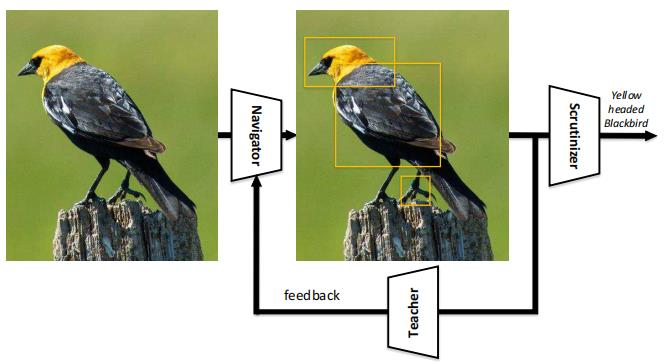

细粒度分类汇总¶
注：如非特殊说明，源码均为PyTorch版本
2021¶
ICCV：
CAL
简介：本文提出了一种基于因果推理的反事实注意力学习方法，可以让网络学到更有效的注意力。通过比较事实注意力和反事实注意力对最终的影响来评估注意力的质量，同时最大化二者的差异来鼓励网络学习更有效的视觉注意力。CAL仅在训练过程中引入了可忽略的额外计算成本，在测试过程中不会引入任何计算成本，并且该方法是一个与模型无关的框架，可以轻松地嵌入到大部分的注意力机制中，用于增强注意力的学习和减轻数据集偏差的影响，适用于各种细粒度的视觉识别任务。
源码地址：https://github.com/raoyongming/CAL
SPS
简介：本文作者通过统计，发现了中级模型存在一个问题，即只有少量的图像区域有助于最终的预测，因此提出了随机部分交换的方法来解决这一问题。主要思想就是将一张真实的特征作为噪声源去干扰另一个特征，并且证明了这种策略有效地促进了神经网络在预测过程中依靠更多的区域做判断，作者还展示了它在提高模型泛化能力和可解释性方面的优势。
源码地址：https://github.com/Shaoli-Huang/SPS
2020¶
CVPR：
ACNet
简介：本文提出了用于细粒度分类的注意力卷积二元神经树(ACNet)，具体的来说，树网络中从根结点到叶结点具有多种路径，每条路径均插入了注意力转换器，用于让网络在不同的根节点上聚焦于不同的判别力区域，最终的预测概率由每个叶节点与其相应的积累概率决定，概率最大的类别就是最终的图片类别。
源码地址(PyTorch版本)：https://github.com/FlyingMoon-GitHub/ACNet
ECCV：
PMG
简介：本文将渐进训练策略应用到细粒度分类任务中，提出了一种新的多粒度(PMG)训练框架，该框架主要由两部分组成：①以渐进方式融合多粒度特征的新型训练策略；②用于形成包含不同粒度级别信息图像的拼图生成器。通过将该两个模型加以组合，可以有效地使网络学习不同级别的粒度信息，并且可以使各粒度间的特征相融合，充分地让网络探索他们之间的互补关系。
论文地址：https://arxiv.org/pdf/2003.03836.pdf
源码地址(PyTorch版本)：https://github.com/PRIS-CV/PMG-Progressive-Multi-Granularity-Training
AAAI：
API-Net
简介：本文算法的提出始终围绕着一个核心的思想：通过联合比较一对图像来区分相似物体之间的细微差异，可以更好地提升模型对物体精细特征的表示能力。作者依据上述思想提出了一种用于细粒度分类的成对交互网络(API-Net)，他可以自适应地从一对图像中发现对比线索，并且通过成对交互模块来区分它们。
论文地址：https://arxiv.org/pdf/2002.10191v1.pdf
源码地址：https://github.com/PeiqinZhuang/API-Net
TIP：
MC-Loss

简介：本文提出了一种用于学习局部判别特征的损失函数——通道交互损失(MC-Loss)，该损失可以有效地驱动特征通道更具有区分性，并且让其聚焦于各个区域。更重要的是在不引入额外参数的前提下，可以将该损失应用到不同的网络架构中，提升网络的细粒度特征提取能力。
论文地址：https://arxiv.org/pdf/2002.04264
源码地址(PyTorch版本)：https://github.com/dongliangchang/Mutual-Channel-Loss
2019¶
ICCV：
Cross-X
简介：本文提出了一种用于细粒度分类的Cross-X网络结构，通过探索不同图像、不同层特征之间的联系，来学习稳定的细粒度特征。通过围绕“相同语义部分的特征虽然来自不同类别的不同图像，但应该比不同语义部分的特征更相关”这一思想，设计了C3S正则化器来优化网络语义特征的提取能力，并且设计了CL损失来让网络学习更稳定的特征，提高了鲁棒性。
源码地址(PyTorch版本)：https://github.com/cswluo/CrossX
S3N
简介：本文利用图像分类网络学习到的类峰值响应来估计细粒度图像的信息区域，再利用该区域指导对原图的选择性采样过程，从而突出图像中的细节并且不丢失周围的上下文信息。通过将重采样后的图像再次传入相同的特征提取网络中，来更新所学习的类峰值响应。该网络提出了两种采样分支，一种是对图像峰值响应点中响应值较高的局部区域进行采样(判别分支)，通过凸显图像具有区分性的视觉信息，从而提高网络特征提取的能力；另一种是对图像峰值响应点中响应值较低的全局区域进行采样(互补分支)，通过凸显图像中差异小的区域，让网络探索图像中的微小差异，鼓励网络挖掘其他的视觉线索，从而提高网络多元特征表示的能力。上述两个分支是相辅相成的，在提高网络识别精度的同时还提高了网络模型的泛化能力，提高了识别分类的稳定性。
源码地址：https://github.com/Yao-DD/S3N
MGE-CNN
简介：本文提出了一个用于细粒度分类的统一框架，该框架主要基于专家混合模型，但是与传统的方法不同，作者通过让后一个专家学习前一个专家的先验信息来将细粒度问题划分为不同的子空间问题。作者通过结合逐步增强的策略和基于KL散度的约束来学习具有多样性的专家模型，最终的预测是通过使用由门控网络生成的权重对所有专家的预测进行加权求和而得到的。
CVPR：
DCL
简介：本文提出了一种用于细粒度分类的DCL网络。首先通过破坏学习，提高了识别的难度，从而引导网络学习细粒度识别中的专业知识(细节差异)。而构建学习可以模拟物体各部分之间的语义关联，从而引导网络学习物体各部分之间的相关性。同时，该网络在测试过程中只需要将图片传入主干特征提取网络中进行分类预测，计算量小，具有很好的实用价值。
源码地址(PyTorch版本)：https://github.com/JDAI-CV/DCL
其他：
WS-DAN
简介：本文通过将弱监督学习和数据增强相结合，提出了一种弱监督数据注意力网络，弱监督学习为数据增强提供空间分布(即注意力)，数据增强鼓励学习多样性的注意力，他们相互促进，共同优化网络，使得网络能够学到来自多个局部区域的判别图像特征。
论文地址：https://arxiv.org/pdf/1901.09891v2.pdf
源码地址：https://github.com/GuYuc/WS-DAN.PyTorch
2018¶
ECCV：
NTS-Net

简介：本文提出了一种新的无需边界框标注的细粒度分类算法。由navigator模块预测区域信息量，Teahcer模块对预测的信息量打分，利用区域的信息量和置信度(分数)之间的排序损失，对navigator进行优化，最后Scrutinizer模块将综合考虑原图特征以及一些信息量大的区域特征，对图片的类别做出最终的判断，三个模块互相合作，互相加强，有效地提高了网络细粒度的分类能力。
源码地址：https://github.com/yangze0930/NTS-Net
PC
简介：本文提出了一种成对混淆(PC)优化策略，通过鼓励输出的混淆来提高细粒度视觉分类任务的泛化能力。实验表明，经过PC训练出来的网络显著地改进了模型的定位性能，有利于提高分类的精度。与一般设计新的、复杂的网络结构相比，PC易于实现，不会在训练期间增加过多的开支，并且便于添加到各种网络模型中，来提高模型的性能。
源码地址：https://github.com/abhimanyudubey/confusion
2017¶
ICCV：
MA-CNN
简介：本文作者提出了一种用于细粒度识别的多重注意力卷积神经网络，同时提出了距离损失和多样性损失来优化不同分支的注意力，使得生成的局部注意力图具有紧密度高、多样性强的特点，并且利用交替优化策略实现判别区域的定位和细粒度特征的表示相互促进学习。
源码地址：
-
https://github.com/Jianlong-Fu/Multi-Attention-CNN（官方代码，caffe版本）
-
https://github.com/liangnjupt/Multi-Attention-CNN-pytorch（PyTorch版本）
CVPR：
RA-CNN
简介：本文围绕区域定位和特征学习可以相互促进这一思想，提出了循环注意力网络，网络的核心结构是注意力建议子网络(ANP模块)，只需要提供图片的标签，就可以让该子网络迭代产生由粗到细的多尺度注意力区域，进一步将其裁剪放大，学习放大后的微小差异，可以有效地提高细粒度特征提取的能力；并且提出了利用尺度内分类损失来优化特征提取能力、利用尺度间排序损失来优化区域定位能力，并且还提出了交替学习的训练策略，让特征提取学习和区域定位学习互相促进，交替优化。
论文地址：https://openaccess.thecvf.com/content_cvpr_2017/papers/Fu_Look_Closer_to_CVPR_2017_paper.pdf
源码地址(PyTorch版本)：https://github.com/jeong-tae/RACNN-pytorch
2015¶
ICCV：
B-CNN
简介：本文主要提出了用于聚合二阶统计数据的B-CNN架构，以矩阵外积的形式组合一幅图片的两种特征，使网络充分探索零件特征之间的交互关系，从而使网络更好地理解图像，进一步提高模型性能。
最后一次修改日期：2023年1月29日